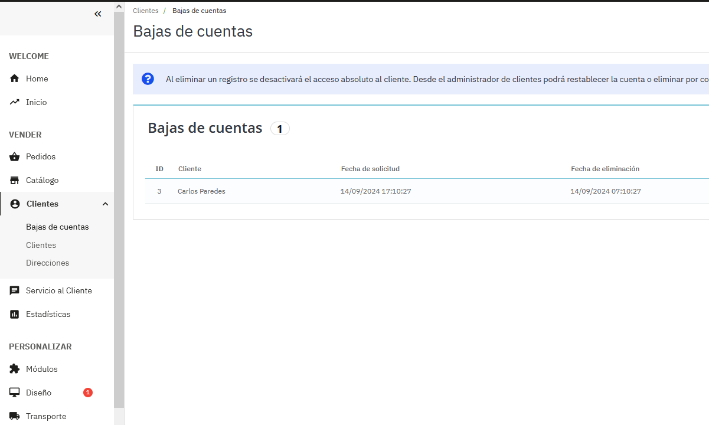

Módulo Prestashop - Baja de clientes
Baja de clientes versión 1.0
Este módulo permite a los clientes solicitar la baja de sus cuentas en la tienda, cumpliendo con la normativa LOPD y se puede instalar desde la versión 1.7.8.8 a 8.1x
La vista diseño es adaptable a dispositivos móviles.
€ 18.90 Euros

Descripción:
Este módulo permite a los clientes solicitar la baja de sus cuentas en la tienda, cumpliendo con la normativa LOPD (Ley Orgánica de Protección de Datos). Además, proporciona a los administradores una interfaz en el back-office para gestionar estas solicitudes de baja.
Características principales
1. Permite a los clientes solicitar la baja de su cuenta desde el front-office.2. Crea una nueva sección en el back-office para gestionar las solicitudes de baja.
3. Muestra una notificación en la barra superior del back-office con el número de solicitudes pendientes.
4. Permite a los administradores procesar las solicitudes de baja, desactivando las cuentas de los clientes.
Instalación
1. Descarga el archivo ZIP del módulo.2. Ve al back-office de tu tienda PrestaShop.
3. Navega a "Módulos" > "Gestor de módulos".
4. Haz clic en "Subir un módulo" y selecciona el archivo ZIP descargado.
5. Una vez subido, haz clic en "Instalar" y luego en "Configurar".
Uso para clientes
- Los clientes pueden solicitar la baja de su cuenta desde su página de "Mi cuenta" en el front-office.Uso para administradores
1. En el back-office, verás una nueva opción "Bajas de Cuentas" en el menú lateral, bajo la sección "Clientes".2. En la barra superior del back-office, aparecerá una notificación con el número de solicitudes de baja pendientes.
3. Al hacer clic en "Bajas de Cuentas", accederás a una lista de todas las solicitudes de baja.
4. Puedes procesar las solicitudes haciendo clic en el botón "Eliminar" junto a cada solicitud.
5. Al procesar una solicitud, la cuenta del cliente se desactivará, pero no se eliminará completamente.
Configuración
- En la página de configuración del módulo, puedes establecer el período de gracia para la eliminación de cuentas (en días).Notas importantes
- Al procesar una solicitud de baja, la cuenta del cliente se desactiva, pero no se elimina completamente de la base de datos.- Los administradores pueden reactivar las cuentas desactivadas desde la sección de gestión de clientes si es necesario.
- El módulo cumple con la normativa LOPD al permitir a los clientes solicitar la baja de sus datos.
Nota: Si tuviera algún problema con la instalación, le brindamos el soporte gratuito. Contacte con nosotros para cualquier duda y estaremos encantados de ayudarle. Email: chrishb2000@gmail.com
Más imagenes
Ver video como se realiza la instalación